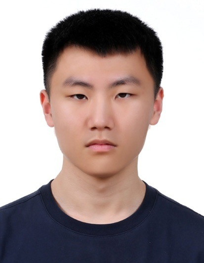

RGB + NIR

Hyunwoo Kang
Undergraduate Researcher · POSTECH
Computer Graphics Lab. · Advised by Prof. Seung-Hwan Baek
I am an undergraduate student in Computer Science and Engineering at POSTECH and an undergraduate researcher at the Computer Graphics Lab., advised by Prof. Seung-Hwan Baek. My research interests include computational imaging, computer vision, and inverse rendering.
I am also interested in polarization-based visual perception and vision-language-action models for robotic manipulation.
Research Interests
Publication
Education & Research Experience
- Education
- B.S. in Computer Science and Engineering
POSTECH · February 2023 – February 2027 (expected) - Research
- Undergraduate Researcher
Computer Graphics Lab., POSTECH · March 2025 – Present
Advisor: Prof. Seung-Hwan Baek
Contact
Email: cein39296@postech.ac.kr
Affiliation: Computer Graphics Lab., POSTECH, Pohang, Republic of Korea